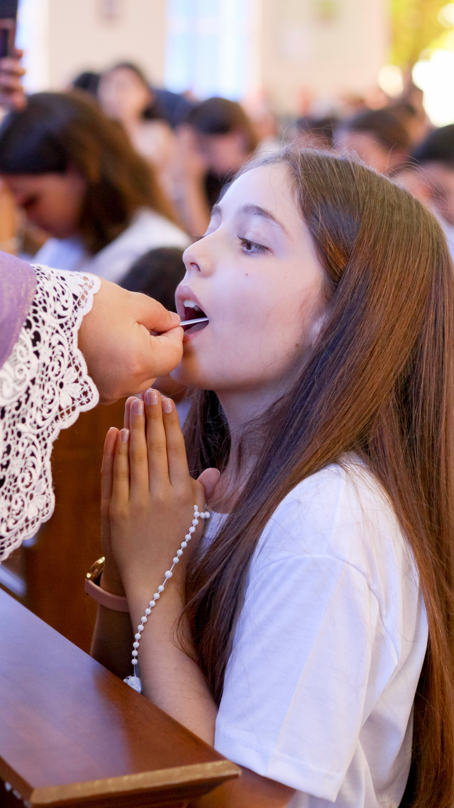
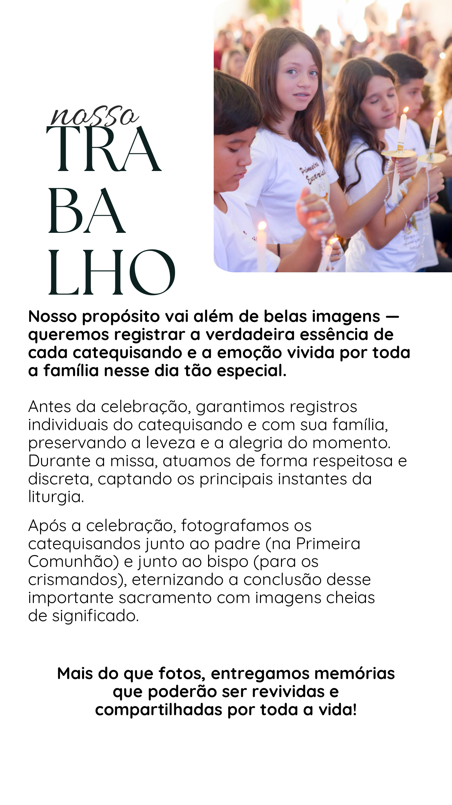
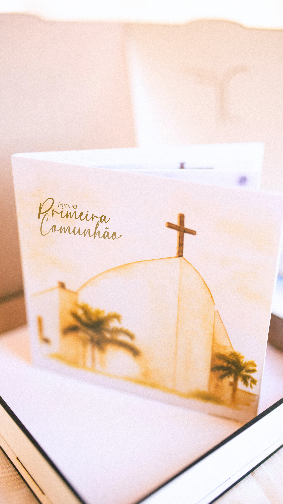
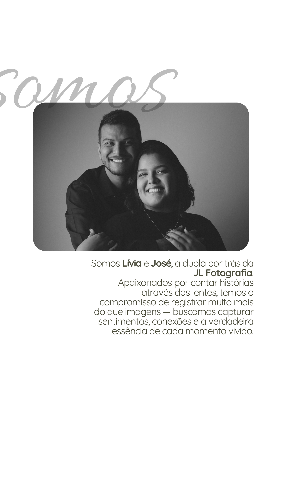
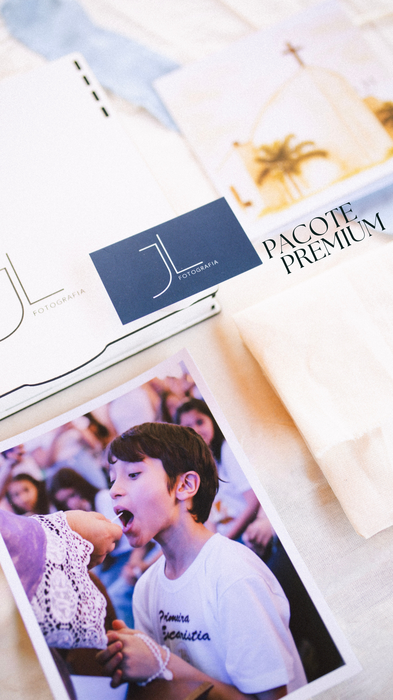

O sinal confirma a reserva e disponibilidade da data.
Fotografar com leveza,
respeito e sensibilidade.
Antes da celebração, buscamos os registros individuais e com a família. Durante a missa, atuamos de forma discreta e atenta aos principais momentos da liturgia. Depois, guardamos também os encontros que encerram esse dia com significado.



Escolha a celebração
Cada sacramento merece
Cada sacramento merece
um cuidado próprio.
01
Sacramento do Batismo
Batizado
Uma vida nova na fé, registrada com delicadeza e respeito a cada gesto da celebração.
Ver orçamento →
02
Primeira Eucaristia
Primeira Comunhão
O encontro com a Eucaristia e uma nova etapa da caminhada cristã.
Ver orçamento →
03
Confirmação
Crisma
Fé confirmada, padrinhos presentes e uma celebração vivida junto da comunidade.
Ver orçamento →
04
Santo Matrimônio
Casamento
Um sacramento vivido a dois e uma história que começa diante de Deus e da família.
Ver orçamento →
Quem estará com vocês
Oi, somos
Oi, somos
Lívia e José.
Somos a dupla por trás da JL Fotografia. Nosso compromisso é registrar muito mais do que imagens: buscamos sentimentos, conexões e a essência de cada momento vivido.
Em sacramentos, isso significa estar presente com discrição, compreender o ritmo da celebração e permitir que a família viva o momento enquanto nós cuidamos da memória.
JL Fotografia • fé, família e memória
Mais que arquivos digitais
Memórias para
Memórias para
guardar nas mãos.
Alguns pacotes incluem fotografias reveladas e álbum autocolante. É uma forma simples e especial de transformar o sacramento em uma lembrança física para a família.

Reserva, pagamento e entrega
Para que tudo seja
Para que tudo seja
simples e tranquilo.
Até 4x sem juros no cartão e 5% de desconto para pagamento à vista.
Após a celebração, a família recebe um link para selecionar as fotografias contratadas.
Após a seleção, as imagens recebem tratamento e são entregues em alta resolução.
JL Fotografia • Sacramentos
Uma memória que
Uma memória que
acompanha a fé.
Escolha o sacramento ou fale com a gente para entender qual cobertura combina melhor com a sua celebração.
Falar com a JL